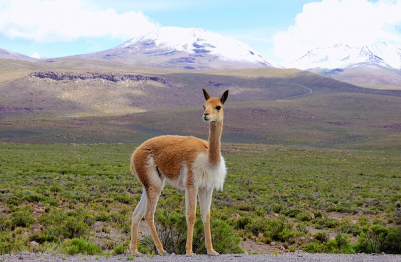

The Peruvian flag features red and white horizontal stripes, symbolizing the bloodshed during the fight for independence and the snow-capped Andes Mountains, respectively. The central coat of arms embodies the nation's history and prosperity with a wreath representing victory, peace, and a cornucopia symbolizing agricultural abundance. This flag serves as a powerful and condensed emblem of Peru's rich heritage, struggles, and national identity.
Dina Ercilia Boluarte Zegarra is a Peruvian politician, civil servant, and lawyer currently serving as the first woman President of Peru since 7 December 2022. She is a member of the Peru Libre political party and has served as the first vice president and minister at the Ministry of Development and Social Inclusion. Boluarte was expelled from the Peru Libre party, she aligned with the right-wing Congress for political support instead of the constituents that elected her.
The vicuña, Peru's national animal, is culturally significant for its luxurious wool and historical reverence by the Inca civilization. Protected by laws due to the threat of extinction, the vicuña symbolizes Peru's cultural heritage and the importance of conservation and sustainable resource use. The vicuña's fine wool, prized for its quality and softness, has been a source of economic importance for Peru, contributing to the country's textile industry.
Peru's government on Thursday announced a package of more than two dozen new measures aimed at boosting investments in the Andean nation, which has been hit by a recession. To read the full article, click here.
Used-car startup Kavak is re-concentrating efforts on its home market, a top executive said, following the company's announcement it would close shop in Peru and Colombia. To read the full article, click here.
Mexico's Congress heard from researchers on Tuesday who declared authentic a set of three-fingered Peruvian mummies recently presented as potential evidence of non-human life forms, while declining to certify that the remains were extraterrestrial. To read the full article, click here.
Annual inflation in Peru decelerated to 5.04% in September to hit its lowest level in more than two years, according to official figures published on Sunday, though consumer prices remained some way above the central bank's target rate. To read the full article, click here.